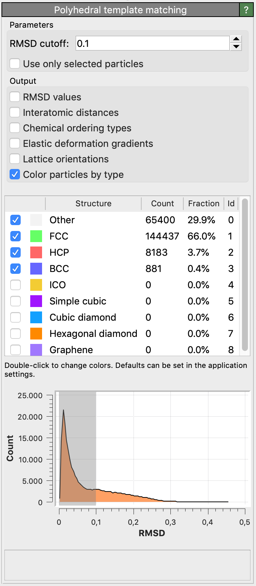

Polyhedral template matching
This modifier classifies the local structural environment of particles using the Polyhedral Template Matching (PTM) method, which allows identification of the local crystalline structure of simple condensed phases. This structure identification method has been described in
doi:10.1088/0965-0393/24/5/055007
Please cite this paper when you use this structure identification algorithm in your work. A preprint is available here.
The PTM approach promises greater reliability than e.g. Common Neighbor Analysis (CNA) in the presence of strong thermal fluctuations and strains. Furthermore, it provides a direct calculation of the local (per-atom) crystal orientation, elastic deformation, strain and chemical ordering type.
The modifier identifies local crystalline order by matching the local atomic neighborhood to the templates of the structural types determined by the PTM algorithm. The templates use a mixture of nearest neighbors, and neighbors of neighbors:
Central atom (white), nearest neighbors (blue), and neighbors of neighbors (green):
FCC
HCP
BCC
Icosahedral
Simple Cubic
Cubic diamond
Hexagonal diamond
Graphene
Determination of diamond and graphene structures is an extension of the published PTM method, though it follows similar principles.
The modifier sets the Structure Type property for each particle, which is encoded as an integer value:
0 = Other, unknown coordination structure
1 = FCC, face-centered cubic
2 = HCP, hexagonal close-packed
3 = BCC, body-centered cubic
4 = ICO, icosahedral coordination
5 = SC, simple cubic
6 = Cubic diamond
7 = Hexagonal diamond
8 = Graphene
By default, the modifier will try to identify only the following structure types: FCC, HCP, BCC. Using the tick boxes in the list, you can specify the set of structural types the modifier should look for. In general, you will get cleaner results by only selecting relevant structures.
{kind=link}
Root-Mean-Square Deviation (RMSD)
For each input particle, the PTM tries to determine a mapping of the local neighborhood to each active candidate structure. If such a mapping exists, a RMSD value is calculated, which is a measure of the spatial deviation from the ideal structure template (the quality of the match). The structural type with the lowest RMSD value is finally assigned to the particle. A histogram of the RMSD values for all structures and all particles is shown in the side panel.
The modifier allows to set a global RMSD cutoff, which limits the assignment of structural types to a range of RMSD values. Particles whose RMSD exceeds the threshold are assigned the Other structure type. By adjusting the RMSD cutoff, the level of robustness can be adjusted. A higher RMSD cutoff will lead to more identifications (and fewer “defect” atoms), though possibly at the expense of false positives. A lower RMSD cutoff will result in fewer structural identifications (and more ‘defect’ atoms and greater sensitivity to perturbations of the lattice), though possibly at the expense of false negatives. The role of the RMSD cutoff is discussed in section 5.1 of the PTM paper.
A reasonable value for the RMSD cutoff parameter is 0.1, which works well for identifying defects in crystalline solids. Note that, for the sake of reproducibility, the chosen RMSD cutoff value should typically be reported in a publication if you use the PTM method to gain quantitative results (e.g. measure crystal defect densities).
Interatomic distances
The internal scale factor computed by the PTM method (see the paper) is the amount by which the atom coordinates are scaled in order to minimize the RMSD between the atom and template coordinates, after translation and rotation. It is proportional to the reciprocal local interatomic distance (including hydrostatic strain components).
The PTM modifier provides an option to output the local interatomic distance (or nearest neighbor distance) as a new particle property, which is computed from the internal scale factor for those atoms that match one of the known structure types. Note that you can compute a local lattice constant (including hydrostatic strain) from the interatomic distance by dividing it by the factor \(\sqrt{1/2}\) (for FCC, HCP), \(\sqrt{3/4}\) (for BCC), or \(\sqrt{3/16}\) (for cubic diamond and hexagonal diamond) using, e.g., the Compute property modifier
Local lattice orientations
The PTM modifier provides the option to calculate a local lattice orientation for atoms that match one of the structural types. The computed orientations are
encoded as quaternions and stored in the Orientation particle property.
This particle property stores the (x,y,z,w) components of each quaternion, following the convention of Ken Shoemake.
To visualize the computed local lattice orientations, you can switch the particle display shape to Cube/Box or apply this Python modifier script, which maps the local orientations to RGB particle colors. Lattice orientations are calculated such that they lie in the fundamental zone of the symmetry group for each structural type. This means that two atoms with very similar orientations can have large misorientations if they lie close to the boundaries of the fundamental zone. For atoms not matching any of the known structure types, no local lattice orientation can be computed. These atoms are assigned the invalid quaternion vector (0,0,0,0).
Orientations are calculated relative to structure-specific reference templates, which are defined in the source code of the PTM implementation used in OVITO. The neighbor atom positions of each reference configuration are given in Cartesian coordinates with the central particle located at the origin. Furthermore, the reference templates are scaled such that the mean distance of the neighbors is 1. This is a slight departure from the templates in the published PTM paper, in that the central atom is no longer included in this calculation.
Tip
OVITO’s compact quaternion representation of orientations may easily be converted to other representation types.
The Orientation property array generated by the PTM modifier is a \(N \times 4\) array
containing the \((x,y,z,w)\) components of the quaternion associated with each particle:
q = data.particles['Orientation']
qx = q[:,0]; qy = q[:,1]; qz = q[:,2]; qw = q[:,3]
Rotation axis and angle: The following Python code translates the quaternions to pairs of rotation axes and angles. The two output arrays will contain the three-dimensional unit axis vectors and the corresponding rotation angles (in radians) for each particle:
scale = numpy.sqrt(qx**2 + qy**2 + qz**2)
axes = numpy.full((len(q), 3), (0.0, 0.0, 1.0))
numpy.true_divide(qx, scale, out=axes[:,0], where=(scale>1e-12))
numpy.true_divide(qy, scale, out=axes[:,1], where=(scale>1e-12))
numpy.true_divide(qz, scale, out=axes[:,2], where=(scale>1e-12))
angles = numpy.zeros(len(q))
angles = 2.0 * numpy.arccos(qw, out=angles, where=(scale>1e-12))
Matrix representation: Alternatively, you can convert the quaternions to \(3 \times 3\) orientation matrices:
matrices = numpy.empty((len(q),3,3))
matrices[:,0,0] = 1.0-2.0*(qy*qy + qz*qz)
matrices[:,0,1] = 2.0*(qx*qy - qw*qz)
matrices[:,0,2] = 2.0*(qx*qz + qw*qy)
matrices[:,1,0] = 2.0*(qx*qy + qw*qz)
matrices[:,1,1] = 1.0-2.0*(qx*qx + qz*qz)
matrices[:,1,2] = 2.0*(qy*qz - qw*qx)
matrices[:,2,0] = 2.0*(qx*qz - qw*qy)
matrices[:,2,1] = 2.0*(qy*qz + qw*qx)
matrices[:,2,2] = 1.0-2.0*(qx*qx + qy*qy)
Another option is to use the scipy.spatial.transform.Rotation facility of the
SciPy package if available. It provides conversion functions
for various representations including the quaternion form used by OVITO.
Elastic deformation gradients
The modifier also provides the option to compute a local elastic deformation gradient for each particle, which is calculated as the
affine transformation of the ideal template which minimizes the sum of squared deviations from the actual neighbor vectors.
The local elastic deformation gradient tensors are output as 3x3 matrices in the Elastic Deformation Gradient
particle property.
Ordering types
The chemical types of atoms are generally ignored by the PTM when identifying the structural phases (e.g. FCC, BCC, etc.). However, the algorithm can additionally
identify the local chemical ordering type by taking into account the species of atoms (given by the values of the Particle Type property, which must be defined).
The binary ordering types identified by the current version of the PTM algorithm are A2 and B2 for BCC;
A1, L10 and L12 for FCC; zincblende for cubic diamond; and wurtzite for hexagonal diamond structures.
The local ordering type is output as an additional particle property named Ordering Type with the following values:
0 = Other, unknown or no ordering
1 = Pure (all neighbors like central atom)
2 = L10
3 = L12 (A-site)
4 = L12 (B-site)
5 = B2
6 = zincblende / wurtzite
The algorithm determines the ordering type at a lattice atom by comparing the types of its neighbors to the type of the central atom. See the paper for details. You can subsequently use the Expression selection modifier to select atoms of a certain structural type and a certain ordering type to give them a distinct color, for example.
Notes
In addition to the PTM, OVITO provides alternative structure identification tools like the Common neighbor analysis modifier, the Identify diamond structure modifier, or the Ackland-Jones analysis modifier.
Note that this modifier requires access to the complete set of input particles to perform the analysis. It should therefore be placed at the beginning of the processing pipeline, preceding any modifiers that delete particles.
The modifier option Use only selected particles restricts the analysis to the currently selected particles. If this option is checked, unselected particles will be ignored (as if they did not exist) and will be assigned the structure type Other. This option can be useful if you want to identify defects in a crystal structure that is not directly supported by the PTM algorithm, but which possesses a known sublattice.
See also
ovito.modifiers.PolyhedralTemplateMatchingModifier (Python API)